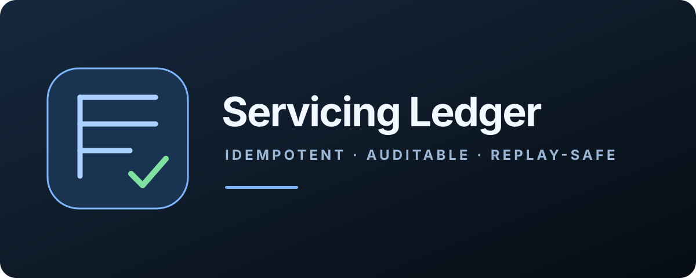
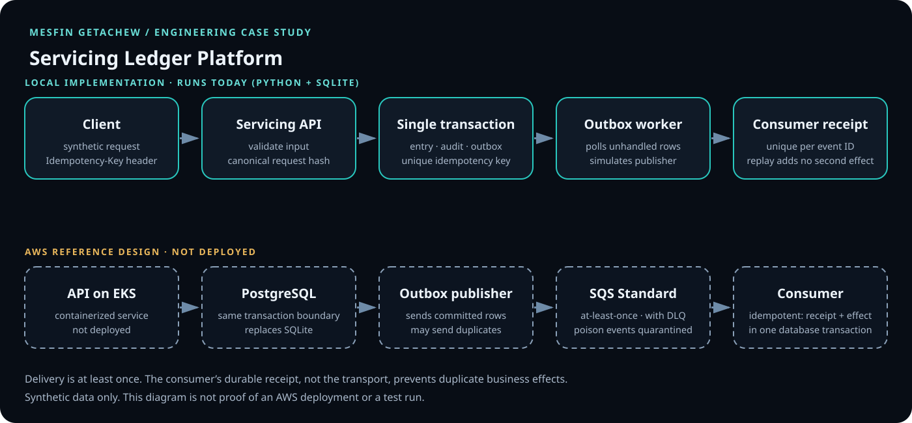

One transaction
The entry, its idempotency key and request hash, an append-only audit row and an outbox event commit together or not at all.
Python · Idempotency · Transactional outbox · AWS reference design
A synthetic loan-servicing workflow that records an entry safely when clients retry and downstream processing is asynchronous.

STATUS
This is an independent portfolio project. It uses synthetic data, does not move money, and does not claim compliance. The table separates what runs from what is planned, using the repository’s own status labels.
| Capability | Status | Evidence |
|---|---|---|
| Entry API with idempotency and a single transaction boundary | Implemented | Ran locally; results below |
| Outbox worker with unique consumer receipts | Implemented | Ran locally; results below |
| Helm chart | Starter | Single replica, disposable; not run |
| Automated tests and CI | Not yet | None in the repository |
| AWS EKS, RDS PostgreSQL, SQS, Terraform, GitOps | Design only | Documents and ADRs; the Terraform folder holds a README, no code |
| SLOs, RTO and RPO, cost estimates | Proposed | Targets, not measurements |
PROBLEM
A servicing channel needs a trustworthy record of each entry even when callers retry and downstream consumers lag. Returning 200 is not enough: the entry could exist without its event, or the event could be delivered twice. The scope stops before settlement, payments or customer communication.
The entry, its idempotency key and request hash, an append-only audit row and an outbox event commit together or not at all.
The same key with the same body returns the original entry. The same key with a different body returns 409. Both rules are enforced by the database, not by application memory.
Consumers keep a unique receipt per event. This makes the business effect idempotent at the consumer. It is not distributed exactly-once processing.
ARCHITECTURE

OBSERVED BEHAVIOUR
The repository records no test results, so I ran the code and kept the output. This is a manual verification of commit 9a45f00 on Python 3.12.3 on 2 November 2026, with synthetic data. It is not an automated test suite. Re-run it to confirm.
| Check | Observed |
|---|---|
| Create an entry with a new key | 201 Created, a Location header, state RECORDED |
| Repeat the same key and body | 200 OK, header Idempotency-Replayed: true, same entry ID |
| Reuse the key with a different amount | 409 IDEMPOTENCY_CONFLICT |
Missing key, or a loan reference without the SYN- prefix | 400 with INVALID_IDEMPOTENCY_KEY or INVALID_REQUEST |
| Worker, first run, then second run | First run recorded one receipt; second run recorded none. Rows: 1 entry, 2 audit events, 1 outbox event, 1 receipt |
| Forced replay: outbox row marked unhandled, worker re-run | No new receipt; row counts unchanged |
| 40 requests, same key, 8 concurrent workers | One 201 and 39 200 replays; one entry, one audit row, one outbox row |
| Burst of 40 simultaneous connections, same key | The same single-row invariant held, but 13 connections were reset by the server before a response |
The resets come from the standard-library server, whose listen backlog defaults to 5. It is a limit of the simulator, not a data-integrity defect, and it is the case idempotency keys exist for: a client that never saw a response retries with the same key. A production service would sit behind a real server with a larger backlog.
git clone https://github.com/DataOpsInnovator/servicing-ledger-platform.git
cd servicing-ledger-platform
export SERVICING_DB_PATH="$PWD/work/servicing.db"
python3 app/servicing_api.py &
SERVER_PID=$!
sleep 1
curl -i -X POST localhost:8080/v1/servicing-entries \
-H 'Content-Type: application/json' -H 'Idempotency-Key: demo-entry-000001' \
-d '{"loan_ref":"SYN-LOAN-0001","amount_cents":12500,"currency":"USD","effective_date":"2026-11-02"}'
python3 app/outbox_worker.py --once
kill $SERVER_PIDRequires Python 3.12 or newer and uses only the standard library. The README gives PowerShell equivalents. Repeat the curl command to see the replay, change the amount to see the conflict, and delete the work/ directory when finished. The sleep gives the server time to start listening. Not run for this page: the container image, the Helm chart, load or performance tests, and any AWS component.
DECISIONS AND TRADE-OFFS
BEGIN IMMEDIATE.Source repository ↗ · Architecture ↗ · Decision records ↗ · Roadmap and validation plan ↗